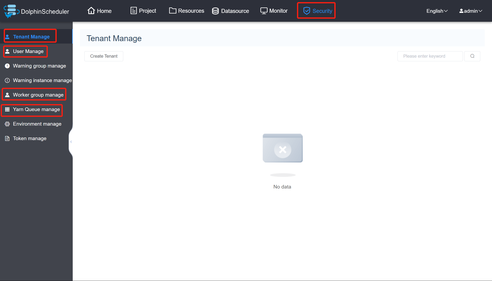

- 开发者指南
DolphinScheduler — E2E 自动化测试
一、前置知识：
1、E2E 测试与单元测试的区别
E2E，是“End to End”的缩写，可以翻译成“端到端”测试。它模仿用户，从某个入口开始，逐步执行操作，直到完成某项工作。与单元测试不同，后者通常需要测试参数、参数类型、参数值、参数数量、返回值、抛出错误等，目的在于保证特定函数能够在任何情况下都稳定可靠完成工作。单元测试假定只要所有函数都正常工作，那么整个产品就能正常工作。
相对来说，E2E 测试并没有那么强调要覆盖全部使用场景，它关注的一个完整的操作链是否能够完成。对于 Web 前端来说，还关注界面布局、内容信息是否符合预期。
比如，登陆界面的 E2E 测试，关注用户是否能够正常输入，正常登录；登陆失败的话，是否能够正确显示错误信息。至于输入不合法的内容是否处理，并不是所关注的重点。
2、Selenium 测试框架
Selenium 是一种开源测试工具，用于在 Web 浏览器上执行自动化测试。该框架使用 WebDriver 通过浏览器的原生组件，转化 Web Service 的命令为浏览器 native 的调用来完成操作。简单来说，就是模拟浏览器，对于页面的元素进行选择操作。
WebDriver 是一个 API 和协议，它定义了一个语言中立的接口，用于控制 web 浏览器的行为。 每个浏览器都有一个特定的 WebDriver 实现，称为驱动程序。驱动程序是负责委派给浏览器的组件，并处理与 Selenium 和浏览器之间的通信。
Selenium 框架通过一个面向用户的界面将所有这些部分连接在一起， 该界面允许透明地使用不同的浏览器后端， 从而实现跨浏览器和跨平台自动化。
二、E2E 测试
1、E2E-Pages
DolphinScheduler 的 E2E 测试使用 docker-compose 部署，当前测试的为单机模式，主要用于检验一些例如“增删改查”基本功能，后期如需做集群验证，例如不同服务之间的协作，或者各个服务之间的通讯机制，可参考 deploy/docker/docker-compose.yml来配置。
对于 E2E 测试（前端这一块），使用 页面模型 的形式，主要为每一个页面建立一个对应的模型。下面以登录页为例：
package org.apache.dolphinscheduler.e2e.pages;
import org.apache.dolphinscheduler.e2e.pages.common.NavBarPage;
import org.apache.dolphinscheduler.e2e.pages.security.TenantPage;
import org.openqa.selenium.WebElement;
import org.openqa.selenium.remote.RemoteWebDriver;
import org.openqa.selenium.support.FindBy;
import org.openqa.selenium.support.ui.ExpectedConditions;
import org.openqa.selenium.support.ui.WebDriverWait;
import lombok.Getter;
import lombok.SneakyThrows;
@Getter
public final class LoginPage extends NavBarPage {
@FindBy(id = "inputUsername")
private WebElement inputUsername;
@FindBy(id = "inputPassword")
private WebElement inputPassword;
@FindBy(id = "btnLogin")
private WebElement buttonLogin;
public LoginPage(RemoteWebDriver driver) {
super(driver);
}
@SneakyThrows
public TenantPage login(String username, String password) {
inputUsername().sendKeys(username);
inputPassword().sendKeys(password);
buttonLogin().click();
new WebDriverWait(driver, 10)
.until(ExpectedConditions.urlContains("/#/security"));
return new TenantPage(driver);
}
}
在测试过程中，我们只针对所需要关注的元素进行测试，而非页面中的所有元素，所以在登陆页面只对用户名、密码和登录按钮这些元素进行声明。通过 Selenium 测试框架所提供的 FindBy 接口来查找 Vue 文件中对应的 id 或 class。
此外，在测试过程中，并不会直接去操作元素，一般选择封装对应的方法，以达到复用的效果。例如想要登录的话，直接传入用户名和密码，通过 public TenantPage login() 方法去操作所传入的元素，从而达到实现登录的效果，即当用户完成登录之后，跳转到安全中心（默认进入到租户管理页面）。
在安全中心页面（SecurityPage）提供了 goToTab 方法，用于测试对应侧栏的跳转，主要包括：租户管理（TenantPage）、用户管理（UserPage）、工作组管理（WorkerGroupPge）和队列管理（QueuePage）。这些页面的实现方式同理，主要测试表单的输入、增加和删除按钮是否能够返回出对应的页面。
public <T extends SecurityPage.Tab> T goToTab(Class<T> tab) {
if (tab == TenantPage.class) {
WebElement menuTenantManageElement = new WebDriverWait(driver, 60)
.until(ExpectedConditions.elementToBeClickable(menuTenantManage));
((JavascriptExecutor)driver).executeScript("arguments[0].click();", menuTenantManageElement);
return tab.cast(new TenantPage(driver));
}
if (tab == UserPage.class) {
WebElement menUserManageElement = new WebDriverWait(driver, 60)
.until(ExpectedConditions.elementToBeClickable(menUserManage));
((JavascriptExecutor)driver).executeScript("arguments[0].click();", menUserManageElement);
return tab.cast(new UserPage(driver));
}
if (tab == WorkerGroupPage.class) {
WebElement menWorkerGroupManageElement = new WebDriverWait(driver, 60)
.until(ExpectedConditions.elementToBeClickable(menWorkerGroupManage));
((JavascriptExecutor)driver).executeScript("arguments[0].click();", menWorkerGroupManageElement);
return tab.cast(new WorkerGroupPage(driver));
}
if (tab == QueuePage.class) {
menuQueueManage().click();
return tab.cast(new QueuePage(driver));
}
throw new UnsupportedOperationException("Unknown tab: " + tab.getName());
}

对于导航栏选项的跳转，在org/apache/dolphinscheduler/e2e/pages/common/NavBarPage.java 中提供了 goToNav 的方法。当前支持的页面为：项目管理（ProjectPage）、安全中心（SecurityPage）和资源中心（ResourcePage）。
public <T extends NavBarItem> T goToNav(Class<T> nav) {
if (nav == ProjectPage.class) {
WebElement projectTabElement = new WebDriverWait(driver, 60)
.until(ExpectedConditions.elementToBeClickable(projectTab));
((JavascriptExecutor)driver).executeScript("arguments[0].click();", projectTabElement);
return nav.cast(new ProjectPage(driver));
}
if (nav == SecurityPage.class) {
WebElement securityTabElement = new WebDriverWait(driver, 60)
.until(ExpectedConditions.elementToBeClickable(securityTab));
((JavascriptExecutor)driver).executeScript("arguments[0].click();", securityTabElement);
return nav.cast(new SecurityPage(driver));
}
if (nav == ResourcePage.class) {
WebElement resourceTabElement = new WebDriverWait(driver, 60)
.until(ExpectedConditions.elementToBeClickable(resourceTab));
((JavascriptExecutor)driver).executeScript("arguments[0].click();", resourceTabElement);
return nav.cast(new ResourcePage(driver));
}
throw new UnsupportedOperationException("Unknown nav bar");
}
2、E2E-Cases
当前所支持的 E2E 测试案例，主要包括：文件管理、项目管理、队列管理、租户管理、用户管理、Worker 分组管理和工作流测试。

下面以租户管理测试为例，前文已经说明，我们使用 docker-compose 进行部署，所以每个测试案例，都需要以注解的形式引入对应的文件。
使用 Selenium 所提供的 RemoteWebDriver 来加载浏览器。在每个测试案例开始之前都需要进行一些准备工作。比如：登录用户、跳转到对应的页面（根据具体的测试案例而定）。
@BeforeAll
public static void setup() {
new LoginPage(browser)
.login("admin", "dolphinscheduler123") // 登录进入租户界面
.goToNav(SecurityPage.class) // 安全中心
.goToTab(TenantPage.class)
;
}
在完成准备工作之后，就是正式的测试案例编写。我们使用 @Order() 注解的形式，用于模块化，确认测试顺序。在进行测试之后，使用断言来判断测试是否成功，如果断言返回 true，则表示创建租户成功。可参考创建租户的测试代码：
@Test
@Order(10)
void testCreateTenant() {
final TenantPage page = new TenantPage(browser);
page.create(tenant);
await().untilAsserted(() -> assertThat(page.tenantList())
.as("Tenant list should contain newly-created tenant")
.extracting(WebElement::getText)
.anyMatch(it -> it.contains(tenant)));
}
其余的都是类似的情况，可参考具体的源码来理解。
三、补充
在本地运行的时候，首先需要启动相应的本地服务，可以参考该页面: [环境搭建](https://dolphinscheduler.apache. org/zh-cn/development/development-environment-setup.html)
在本地运行 E2E 测试的时候，可以配置 -Dlocal=true 参数，用于连接本地，方便对于 UI 界面的更改。
如果是M1芯片的机器，可以使用-Dm1_chip=true 参数,用于配置使用ARM64支持的容器。

在本地运行过程中，如果出现连接超时，可增大加载时间，建议 30 及其以上。

测试的运行过程将会以 MP4 的文件格式存在。